扫一扫，关注我们
4月28日，由北京大学艺术学院民族音乐与音乐剧研究中心创作的大型原创音乐剧《大钊先生》在北京大学百周年纪念讲堂举行了首演。北京大学党委副书记叶静漪、副校长高松、副校长詹启敏与北大师生、校友等一道观看了演出。观看演出的还有北京大学党委原书记、本剧总顾问、李大钊研究会会长朱善璐，原常务副校长吴志攀等。
在雄浑的音乐声中，灰色网纱幕布揭开，为观众开启了一个关于理想、青春、信仰和革命的历史故事。
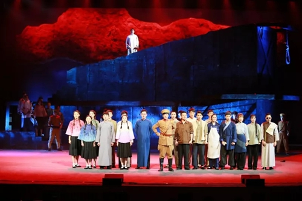
演出现场
灯光逐渐亮起的序幕章节，一声更锣带观众穿越回了1927年4月28日。天刚破晓，盲人、卖油茶的、练把式的都早早聚集在西交民巷，为的是看看用绞刑架杀人的“西洋景”。
诡异的灯光下，一群行刑者高唱：“英吉利的文明杀人不用刀！”旁观的老百姓抱不平：“绳、绳、绳，这就是忠臣的命，这就是咱的文明。”摇滚的曲风、激烈的舞蹈，气氛陡然紧张。
这一切都指向一场绞刑。
音乐剧来到了第一幕，在众人面对新奇的绞刑架众说纷纷的时候，长官宣布带上一众罪犯，一个个犯人被推搡上了刑场——正是李大钊先生和他的学生们。
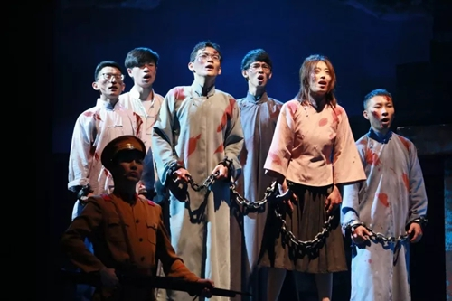
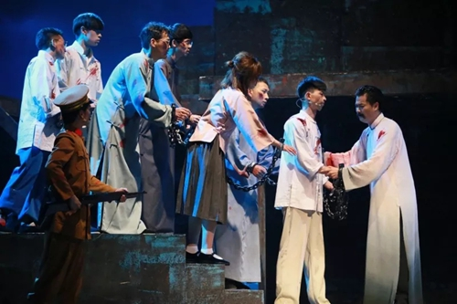
演出剧照
他们站在刑场上，慷慨高歌，申斥着无情的行刑官，抒发着对民众的关怀，又回忆起了在校园里高谈学术的画面。
当说到自己的学生们因自己而受苦，黎明时又要随他上刑场，李大钊痛心万分，他主动要求第一个行刑，只为了关怀学生，让他们多晒一会儿太阳。
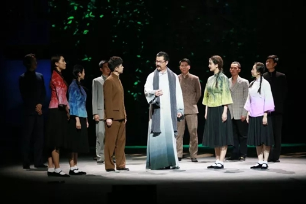
演出剧照
痛斥刽子手的愚昧，又动之以情，晓之以理，他说：“行刑的刀，刀孔可穿一线，这也就是说：万事都要留一线生机，既是给别人也是给自己。“
回忆起在校园的往日，大钊先生难以抑制内心的喜悦。因为在那里，正是他所向往的、自由的学术圣地。
在第二幕《审判》章节，正当刑场上生死危急的时候，上面传来消息，要对李大钊进行再次审问。
这幕剧中，李大钊先生与审讯军官展开了激烈的思想交锋。军官嘲笑李大钊的“主义”，无知的群众也错把“主义”当成“骗人的点子”。
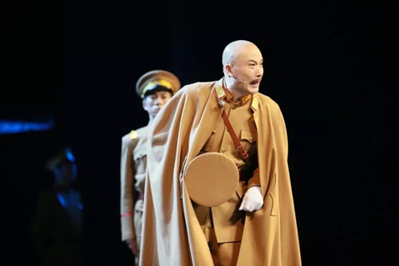
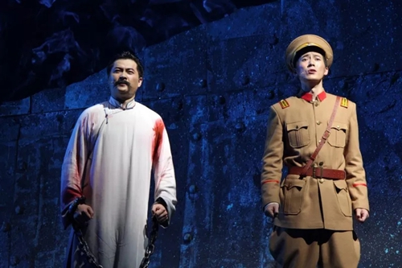
演出剧照
副官引用了李大钊曾说过的“劳工的胜利就是庶民的胜利”，以此询问他，为未开化的民众做无谓的牺牲是否值得？
大钊先生却说：“我活着，就是想让穷苦人过上好日子。”面对死亡，他仍坚信：“试看将来的环球，必是赤旗的世界。”
李大钊的铮铮铁骨震撼了审判官，为了使他屈服，军官押来了她的妻子赵纫兰，企图用儿女情长软化他的态度。未曾想，赵纫兰早已坚定地和李大钊站在同一立场上，反而劝他不用顾及妻女，放心追逐自己的革命理想。
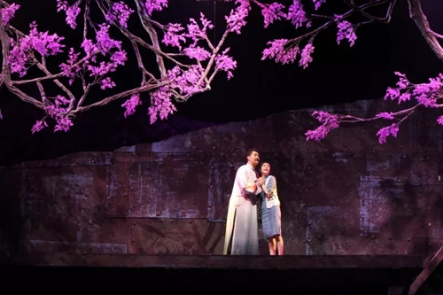
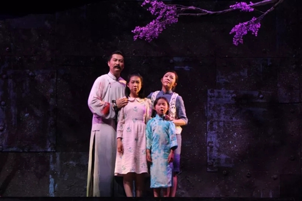
演出剧照
在李大钊与妻子生死诀别的时刻，剧场上空垂下了盛放的丁香花，结合绞刑架的背景，更加令人动容。
在婉转悠扬、如泣如诉的旋律中，大钊先生沧桑的歌声与女儿们清澈的童声交融，生离死别、人生大义面前凄美的爱情、温暖的亲情被表现得淋漓尽致。
情到深处，全场响起了热烈的掌声。
最后一幕，是最扣人心弦的“行刑”。行刑前，一群群底层劳工和青年学生来到刑场，为搭救李大钊做最后的努力。
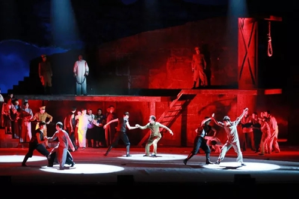
演出剧照
原来他们都曾蒙受李大钊先生的援助，聆听过大钊先生思想的教诲。
此刻，学生们穿上长袍，继承大钊先生的精神；工人们举起锄头，捍卫心中的信仰。
先生为了他们的安危，饱含深情地说：“这条路，应该我先走。”并语重心长地嘱咐他们：“你们是脊梁，你们是山，撑起新的明天。”李大钊宛如一座精神灯塔，指引工人学生们团结起来，吼出内心的愤怒，振聋发聩。
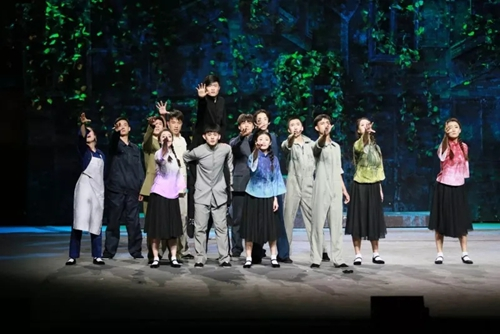
演出剧照
音乐剧也细腻描绘了围观群众的感情变化。从一开始的看热闹、不理解，到最后为大钊先生忿忿不平、被大钊先生心系百姓的胸怀打动，这是大钊先生的个人魅力，也是他的精神在中华大地如燎原之火般燃烧。
大钊先生振臂高呼：“当明天的晨钟响起，自由的曙光会出现，光明的未来会向我们招手，自由的曙光会出现，照遍我们的人民！”
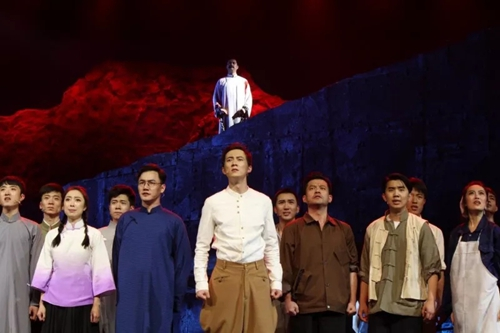
演出剧照
随后，大钊先生视死如归，慨然赴死。
灯光再次逐渐亮起，全场观众掌声雷动，久久不能平息。
在映后交流中，朱善璐作了简短的发言，他指出，戏剧源于生活、高于生活，实现了对历史现实的再创造。今年是李大钊来北大的100周年，也是先生就义91年。剧中很多台词就出自大钊先生本人所作的诗歌、文章。在校庆之前上映这出剧，是北大师生凝聚出的一颗心，是对我们自己的先生的纪念。这是北大的荣耀，也是国家的荣耀。
艺术学院的王一川教授高度肯定了音乐剧的造型力量、感染力量。他指出，音乐剧抓住临刑前的片段，演绎了大钊先生一生的壮举，是个巧妙、感人的演出。他认为，整部剧的主题可以概括为：真理之光、信仰之花。
李大钊后人李亚中先生也来到了现场。他表示，看完音乐剧，他的内心十分地激动，振兴中华、共产主义的理想一定会实现。
除了在校师生及相关主创人员，社会各界人士都对音乐剧保持了极高的关注度。
文艺批评家徐建先生指出，在舞台上呈现革命者、英模人物的境界精神是最难的，如何把虚化实，《大钊先生》进行的艺术探索之一就是把精神境界写进了市井、写进了家庭、写进了社会、最后融进了历史，写出了一段荡气回肠和昂扬激荡。这部作品无论是舞台调度、演员表现，还是音乐叙事、舞美呈现，都是一部完成度、完整性很高的作品。
作家梁鸿分析了音乐剧的巧妙编排，民众和英雄大钊构成多声部的互动，展示了20年代革命初期的众生相。此外，大钊人物塑造立体，剧目展示了他全部的“人性”的方面，把大钊还原为和我们一样的人，他对信仰的追求最终战胜了对死亡本能的恐惧，将历史中主动承担社会运动的知识分子的“大”凸显出来。
中国航空发动机研究院的一批研究员、教授共同观看了《大钊先生》的首映。他们被音乐剧渲染的氛围、大钊先生的精神魅力深深打动。
研究院党委书记杜兵劳在看完《大钊先生》首映后，心情久久不能平静。他表示，我们一定要继承大钊先生的遗志，为实现中华民族伟大复兴的中国梦不懈奋斗。同时希望更多的科技工作者能有机会观看此剧，从中汲取不竭的精神动力，为科技强国做出更大贡献。
许多军人后代来到现场观剧，他们纷纷给予激情赞扬，对主创团队表示感谢。
斯文之道，薪火相传。逝者已矣，但大钊先生的精神将永远铭记在我们心中。
《大钊先生》通过缅怀这位杰出的革命先烈、影响深远的北大先贤，将他的革命精神和人格力量传递到每个青年人的心里，提醒北大学子“不忘初心，牢记使命”，争当走在时代前列的奋进者、开拓者、奉献者。
音乐剧落幕，余音绕梁；《大钊先生》，以精神献礼北大百廿！（文/陈虹、张静、郑思琳）
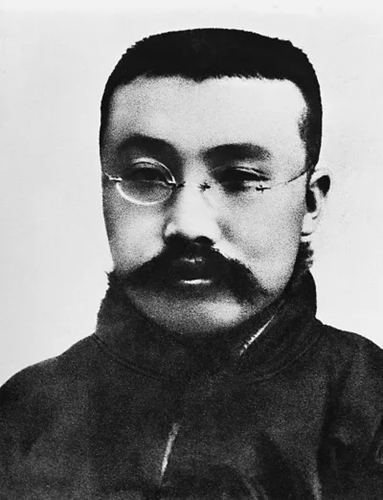
李大钊，伟大的无产阶级革命家。他曾积极投身新文化运动，和封建顽固势力展开激烈斗争。十月革命后，李大钊致力于马克思主义宣传，写下《庶民的胜利》、《布尔什维主义的胜利》等雄文。他曾领导五四运动，成为中国最早的马克思主义者。
五四运动后，李大钊先生领导建立中国共产党早期组织，对中国共产党的创建作出了至关重要的贡献。1927年4月，在反动军阀的白色恐怖中，李大钊先生被捕入狱。他受尽各种严刑拷打，始终坚贞不屈、大义凛然，最终惨遭反动军阀杀害，牺牲时年仅38岁。“铁肩担道义，妙手著文章”是对其一生最好的诠释。
扫一扫，关注我们